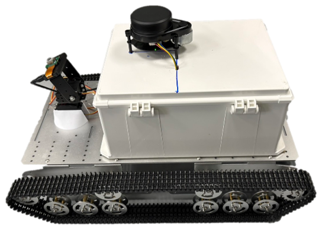

Features
拆開來看，資料是怎麼變成報告的
這一頁把 Greenmind 分成資料取得裝備、GreenMind Console 與果園資料如何被保存三層來說明。 以下為目前原型的設計配置與已完成項目，仍在開發與田間測試中。

Equipment
資料取得裝備
團隊已組出履帶式自走車，車上整合邊緣運算、控制與相機模組， 用來在真實田間通道與泥地地形中近距離取得影像與感測資料。 設備由團隊自行持有、到場作業，農民不需要採購或承擔維護與失竊風險。
- 底盤 履帶式移動載台，因應田間通道與不平整地形。
- 運算 邊緣運算節點，負責較重的影像與模型任務就地處理。
- 感測 相機與感測模組，取得果實、枝葉與田間通道的近距離影像。
- 控制 現場移動維持人工可介入，田間測試以安全停止與人工接管為優先。
目前階段 尚未驗證：長時間田間自主巡檢、大範圍無人操作。目前以小範圍場測確認安全性與影像可用率。
- Task
- 巡檢中
- Sync
- 2 / 3 已同步
介面為設計示意，實際畫面待正式截圖取得後替換。
Platform
GreenMind Console
Console 要解決的問題很單純：讓服務人員隨時知道這座果園巡到哪裡、 取得了什麼影像，以及這一趟服務結束後留下了什麼可以回看的紀錄。
- 建圖與任務 查看已巡檢範圍、任務進度與自走車目前所在位置。
- 相機與資料狀態 影像取得狀況與資料屬性一覽，確認本次任務的可用影像量。
- 上傳與同步 即時上傳、離線補傳與同步狀態追蹤，支撐後續接入雲端服務的需求盤點。
- 紀錄回看 巡檢任務可回看比對，累積成同一座果園的長期追蹤紀錄。
Digital Orchard Profile
果園資料如何被保存與回看
每座果園都有一份可追溯的資料夾：把巡檢時間、任務、影像與感測紀錄串在一起， 讓下一次服務不是重新開始。
-
Step 01
場域盤點
確認田區範圍、通道與本次需要留意的區域，設定巡檢任務。
-
Step 02
資料取得
自走車到場巡檢，每次影像取得都保留時間戳、任務編號與影像屬性。
-
Step 03
平台整理
GreenMind Console 進行完整性檢查與同步狀態追蹤，整理成可回看的任務紀錄。
-
Step 04
觀察報告
把整理過的結果交付成果園資料卡與巡檢報告，回到農民看得懂的語言。
規格看完了，來看服務怎麼跑一趟
Demo 頁有巡檢示範影片、GreenMind Console 介面預覽，以及一趟完整巡檢服務的流程。